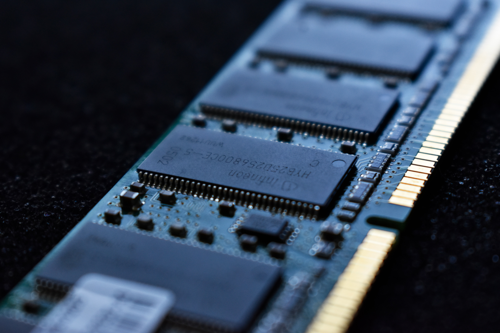

RAM은 다음을 가리키는 말이다.
랜덤 액세스 메모리(RAM, Random Access Memory)는 읽고 쓰기가 가능한 주기억 장치이다.
램 탱크(Ram tank)는 캐나다의 전차이다.
랜덤 액세스 머신은 이론상 컴퓨터 모델 중의 하나이다.
전파흡수재(Radar Absorbing Material)의 약자이다.
《Ram》은 폴 매카트니와 린다 매카트니의 정규 음반이다.
Random Access Memories는 다프트 펑크의 음반이다.